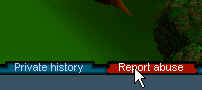

How to handle abusive players
If whilst you are playing RuneScape, you happen to come across another player that is either
harassing yourself or other players, or is generally being disruptive, there are various
things you may do.
In game system
|
Firstly you may report the player in game via the red "report abuse" button situated to
the bottom right of the game client just to the right of the private messages tab.
|

|
The best circumstances to report a player in game are the following:
- Swearing, profanity or racial abuse (see guidance on how to use the Report Abuse System
below)
- Trade scams (lied about the trade to steal items from you)
- Asking other players for passwords (trying to steal accounts)
- Attempting to buy or sell a RuneScape account
- Impersonating our staff
- Advertising a scam website
This will enable us with your help to take quick and effective action against the abusive
players in Runescape.
Please Note: (reference trade scams)
We must remind you though that if you do lend anyone anything it is at your OWN RISK! Many
people are conned by others and whilst we are trying to catch them, the problem will be
minimized if you only engage in swaps and trusts if you are FULLY 100 percent convinced that
they are trustworthy.
Please also note that we cannot replace any money or items that have been lost.
Punishments
Our punishments range from a verbal warning, to black marks being accrued against your
account. This will lead very quickly to temporary and permanent bans should you re-offend.
The severity of punishment will depend on the severity of each report and the number of total
reports against a player.
Caution - How to use the Report Abuse System
If you are going to send in a report against a player you must make sure that it is a
legitimate claim of abuse. This means that it must contain evidence of the above situations
or we will not be able to take any action.
Before sending in a verbal abuse report please try and think about whether you are genuinely
offended by the other players remarks. If the chat filter has blocked out the profanity then
there is no need to send in a report. Please only do so if you are genuinely offended.
Sending in hoax reports slows us down with dealing with your other queries, and repeatedly
doing so is likely to result in action being taken against your account.
For example petty abuse such as simply calling someone a "noob" is not a good enough reason
to report someone for abuse. Being offensive to someone else and then reporting them when
they retaliate is also a complete misuse of the system. Our logs clearly show the incident
that is reported, so it will be easy see who actually started the abuse.
So please, take some time and use some common sense to ensure that your report is valid.
Online Customer Support forms
There are certain circumstances when it is better to report players through our online report
forms which can be found here.
These situations might include
- players using macroers or cheating programs
- hack sites that perhaps you might have stumbled across
- Any other valid abuse that you do not feel can be reported in game
Further helpful hints on abusive players
If you come across a player in game that is harassing you and you wish to ignore the player,
you can do so by reading the following:
If there is a particular user causing a problem then use the ignore function to block further
messages. (To do this click the red 'unhappy face' icon between the yellow 'happy face' icon
and the log out button, click where it says 'add name' and finally enter the name of the user
to block.)
If you continue to receive unwanted messages, or receive harassment from multiple players
then you should use the privacy controls to block all messages from everyone except your
friends. (To do this click the buttons marked 'Public Chat', 'Private Chat' and 'Trade /
Duel' at the bottom of the screen until they say either 'friends' so only people on your
friends list can speak to you, or 'off' to prevent all messages).
If you have any further enquiries please contact us via customer support.
|